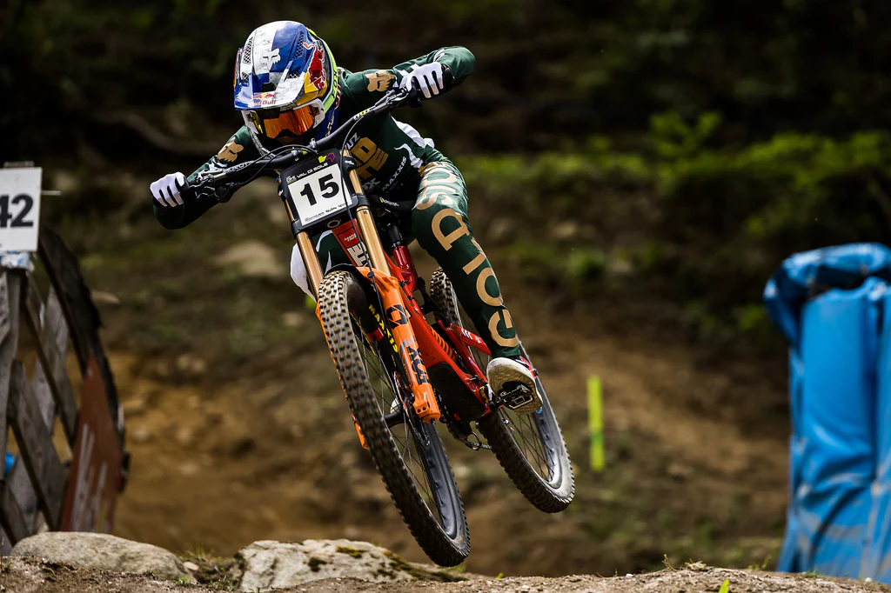

Jackson Godstone
Piloto profissional de Downhill

Jackson Goldstone, fenômeno canadense do mountain bike, começou como sensação viral na pré-escola fazendo manobras em uma bicicleta de equilíbrio. Ele evoluiu para um dos maiores campeões da história do esporte, conquistando títulos mundiais juniores e tornando-se uma referência absoluta e dominante no circuito mundial de Downhill.
- O Menino Prodígio: Nascido em Squamish, Colúmbia Britânica (berço do MTB no Canadá), ele ficou mundialmente famoso em 2010 com o vídeo viral Jackson Run Bike to Kindergarten. Nele, com poucos anos de idade, já saltava e dropava obstáculos em uma bicicleta sem pedais.
- Domínio nas Categorias de Base: Antes mesmo de chegar à categoria Elite, ele já era amplamente considerado um fenômeno, acumulando vitórias e chamando a atenção por sua habilidade natural tanto no freeride quanto na velocidade pura.
- Chegada à Elite (2023):Em sua primeira temporada na elite do Downhill, ele logo se destacou, vencendo etapas importantes da Copa do Mundo, como em Val di Sole (Itália), e liderando o circuito mundial logo aos 19 anos.
- Consagração Mundial: Superando graves lesões e adversidades, Goldstone cravou seu nome na história ao conquistar o cobiçado título mundial na categoria Elite, consolidando sua transição de garoto prodígio para a principal estrela do esporte.
Títulos / Curiosidades
- Campeonato Mundial de Elite (2025)
- Copa do Mundo de Elite (2025)
- Red Bull Hardline (2022)
- Temporada Júnior Perfeita (2021)
idade: 22
Peso: 73 kg
Altura: 1.70